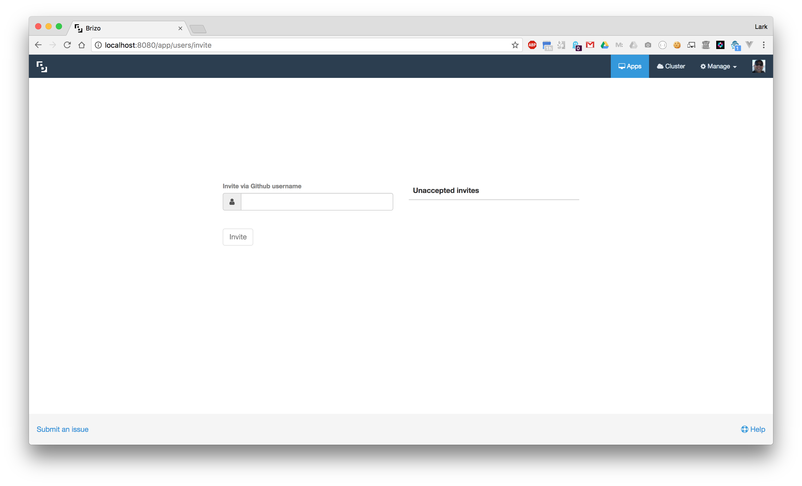

<div class="help-index">
  <div class="container-fluid">
    <div class="row">
      <div class="col-md-6 col-md-offset-3">
        <a [routerLink]="['/help']">&laquo; Back to Help</a>
        <h3>Invite Users</h3>
        <hr />
        <p>Brizo uses Github's Oauth service for authentication.</p>
        <p>Before a new user can use Brizo they will need to be invited using their Github username.</p>
        
        <p>Users that have not yet accpeted their invitations to Brizo will be listed under the "Unaccepted invites".</p>
      </div>
    </div>
  </div>
</div>